D'après le programme officiel tunisien (Thème 1, Objectif 5), ce chapitre vise à :
1 Signaler l'intérêt économique des phosphates pour la Tunisie
2Localiser les principaux gisements en Tunisie
3 Déterminer les propriétés physico-chimiques de la roche (observations et expériences)
4 Formuler des hypothèses sur la genèse et reconstituer les conditions de formation
5 Réaliser un dossier sur l'exploitation et ses conséquences sur l'environnement et la santé
6 Relier les indices géologiques (fossiles, gypse, stratigraphie) au paléoenvironnement éocène
📚 Préacquis
Ch.2 — La stratigraphie permet de dater les roches et de reconstituer les paléoenvironnements à partir des fossiles.
Ch.3 — La carte géologique permet d'identifier la nature des roches et leur répartition dans l'espace.
Une roche sédimentaire se forme par accumulation et consolidation de sédiments en milieu aquatique ou aérien.
L'éocène est une époque géologique du Paléogène (environ 56–34 millions d'années) où la Tunisie était partiellement recouverte par la mer.
Les fossiles sont des restes ou traces d'organismes du passé conservés dans les roches sédimentaires.
❓ 4 Questions directrices
Quel est l'intérêt économique des phosphates pour la Tunisie ?
Quelles sont les propriétés physico-chimiques des phosphates tunisiens ?
Où trouve-t-on des phosphates en Tunisie (localisation) ?
Comment se forment les roches phosphatées (genèse) ?
🧠 Comprendre avant de mémoriser
Ce chapitre est central pour la géologie tunisienne au CAPES. Il articule trois axes : l'économie (la Tunisie est 1er exportateur mondial de TSP), la pétrographie (propriétés physico-chimiques des phosphates) et la paléogéographie (reconstitution des conditions de l'éocène à partir des fossiles et des roches associées). La logique est : observer → analyser les propriétés → dater et localiser → comprendre la genèse.
Clique sur chaque notion pour explorer · Pièges classiques CAPES et connexions révélés
⚗️
Intérêt éco. + pollution
TSP, DAP, phosphogypse
🪨
Propriétés physico-chimiques
Pellets, porosité, effervescence
🗺️
Localisation & Genèse
Kasserine, éocène, mer peu profonde
⚠️
3 Pièges classiques
Erreurs fréquentes CAPES
🔗
Connexions manuel
Ch.2 + Ch.3 + Thème 2
⚗️ Intérêt économique et impact environnemental
📊 Position de la Tunisie sur le marché mondial du phosphate
1er
Exportateur mondial de TSP
2ème
Exportateur d'acide phosphorique
3ème
Exportateur de DAP
Depuis la découverte du phosphate en 1885 par Philippe Thomas à Djebel Thelja (Metlaoui), la production tunisienne a atteint plus de 8 millions de tonnes/an en l'an 2000. La filière phosphate génère des produits dérivés utilisés dans l'agriculture (engrais) et l'industrie (détergents, pesticides).
Produit dérivé
Abréviation
Utilisation principale
Triple Super Phosphate
TSP
Engrais phosphaté concentré
Dicalcium phosphate
DCP
Engrais + alimentation animale
Diammonium phosphate
DAP
Engrais NPK complet
Acide phosphorique
H₃PO₄
Détergents, pesticides, engrais
NPK complet
NPK
Engrais azote-phosphore-potassium
💡 Pollution par le phosphogypse — données réelles de Sfax
Les industries phosphatées rejettent 310 000 tonnes/an de déchets solides, dont 13 000 t/an de phosphogypse. L'analyse des nappes phréatiques de Sfax à proximité des sites de stockage révèle des niveaux alarmants : pH = 3,4 (normal : 6,5–9), fluor = 87,25 mg/L (normal : 5), phosphate = 10 100 mg/L (normal : 0,1). Le phosphogypse contient des métaux lourds toxiques (mercure), des acides et des éléments radioactifs. Il provoque l'asphyxie de la flore marine et des troubles de santé chez les populations riveraines.
L'acide chlorhydrique (HCl) réagit avec le calcaire (CaCO₃) selon la réaction : CaCO₃ + 2HCl → CaCl₂ + H₂O + CO₂↑ Le dégagement de CO₂ produit l'effervescence observée. Cette réaction prouve que la roche contient du calcaire dans son ciment (roche compacte) ou dans ses fossiles. C'est un test pétrographique de base que l'on applique sur toutes les roches sédimentaires.
🗺️ Localisation et genèse — l'essentiel
Les gisements de phosphates tunisiens sont regroupés en 3 bassins autour de la région de Kasserine (Gafsa, Metlaoui, M'dhilla, Redayef, Kalaa Khasba...). Les phosphates sont d'âge éocène (environ 50–40 Ma).
Indice
Observation
Interprétation
Fossiles marins
Dents de requin, fossiles de tortue marine, plancton
Milieu marin (mer peu profonde)
Roches associées
Gypse + calcaires coquillers
Eau salée + climat chaud et sec
Stratigraphie
Absence de dépôts éocènes à Kasserine
Kasserine = île émergée à l'éocène
Odeur fétide
Chauffage du phosphate
Matière organique décomposée (origine organique)
💡 Reconstitution de la paléogéographie tunisienne à l'éocène
À l'éocène, la région de Kasserine était une île émergée entourée de bassins marins peu profonds (Gafsa, Metlaoui, Kalaa Khasba...). Ces bassins, limités par des hauts-fonds, piégeaient le plancton marin riche en phosphate. Le plancton mort s'accumulait au fond dans des milieux pauvres en O₂ et était décomposé par des bactéries anaérobies en sédiments phosphatés. La présence de gypse confirme un climat chaud et sec favorisant l'évaporation de l'eau salée.
⚠️ 3 Pièges classiques CAPES
⚠️ Piège 1 — Origine minérale ≠ origine principale ▼
On peut confondre les deux origines du phosphate. L'eau de mer contient du phosphate dissous (HPO₄²⁻) qui peut précipiter (origine minérale). Mais on admet que les phosphates tunisiens ont surtout une origine organique : accumulation de matière organique riche en phosphate (plancton + vertébrés) + décomposition par bactéries anaérobies. Les deux mécanismes coexistent mais l'origine organique est prépondérante.
⚠️ Piège 2 — Kasserine n'avait pas de phosphates à l'éocène ▼
L'absence de dépôts éocènes à Kasserine ne signifie pas que le phosphate n'existe pas dans cette région ! Cela signifie que Kasserine était une île émergée à l'éocène → pas de dépôts marins. Le phosphate s'est formé dans les bassins autour de cette île (Gafsa, Metlaoui...). Kasserine est aujourd'hui la région de référence car elle se situe au centre des gisements.
⚠️ Piège 3 — Décomposition partielle ≠ totale ▼
La formation du phosphate nécessite une décomposition PARTIELLE de la matière organique. Une décomposition totale donnerait CO₂ + H₂O, sans résidu phosphaté. C'est le milieu pauvre en O₂ (anaérobie) qui empêche la décomposition totale et permet la conservation du phosphate sous forme de sédiment. Les bactéries anaérobies jouent un rôle crucial dans ce processus.
🔗 Connexions avec le manuel
← Chapitre 2 — Stratigraphie
Datation et paléoenvironnement
La loi de superposition et les fossiles stratigraphiques permettent de dater les phosphates à l'éocène. L'étude des roches associées (gypse, calcaires coquillers) reconstitue le paléoenvironnement.
← Chapitre 3 — Carte géologique
Localisation des gisements
La carte géologique révèle les affleurements de terrains éocènes dans la région de Gafsa-Kasserine. L'absence de terrains éocènes à Kasserine sur la carte confirme l'île émergée à l'éocène.
← Chapitre 4 — Ressources en eau
Pollution des nappes
Le phosphogypse stocké près de Sfax contamine les nappes phréatiques (pH 3,4 ; fluor 87,25 mg/L). Ce chapitre illustre concrètement les impacts de l'exploitation sur les ressources en eau (Ch.4).
→ Thème 2 — Écosystèmes
Impact sur la biodiversité
La pollution par le phosphogypse (asphyxie de la flore marine) et les gaz fluorés (disparition d'espèces végétales) relient directement ce chapitre aux problèmes de biodiversité étudiés dans le Thème 2.
💭 Questions de réflexion
1. La Tunisie exporte massivement ses phosphates sous forme de produits transformés (TSP, DAP, acide phosphorique) plutôt que de minerai brut. Quelle est la valeur ajoutée de cette stratégie et quels en sont les inconvénients environnementaux ?
La transformation locale du minerai crée de la valeur ajoutée (le TSP vaut ~3x plus que le minerai brut), génère des emplois et renforce le rang de la Tunisie sur le marché mondial (1er TSP, 2ème acide phosphorique). Inconvénients : les usines de traitement (Skhira, Sfax) génèrent des déchets solides (13 000 t/an de phosphogypse) et gazeux (gaz fluorés et ammoniacaux). Ces pollutions dégradent les nappes phréatiques, la flore marine et la santé des populations riveraines — une externalité négative qui doit être intégrée dans le calcul économique réel.
2. Comment expliquer que les gisements de phosphates se trouvent autour de Kasserine et non pas À Kasserine ? Quelle information géologique cela nous donne-t-il sur l'éocène tunisien ?
L'absence de dépôts éocènes à Kasserine (confirmée par l'étude stratigraphique) indique que cette région était une île émergée à l'éocène. Les dépôts sédimentaires ne se forment qu'en milieu aquatique. Les bassins marins peu profonds autour de cette île (Gafsa, Metlaoui, Kalaa Khasba...) constituaient les "pièges à phosphates" : limités par des hauts-fonds, alimentés par des courants ascendants riches en nutriments, favorables à la prolifération du plancton. Cette reconstruction paléogéographique est un exemple d'utilisation combinée de la stratigraphie, de la paléontologie et de la pétrographie.
⚗️ Activité 1 — Intérêt économique et conséquences sur l'environnement (p.53–55)
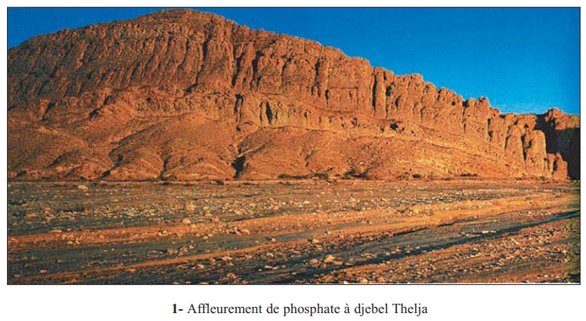
📷 Fig.1 — Affleurement de phosphate à Djebel Thelja
Image du manuel p.52 — Placez le fichier dans images/T1Ch5_Fig1_affleurement_phosphate_Thelja.png
1. Extraction et transformation du phosphate
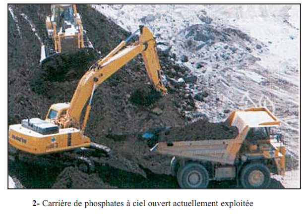
📷 Fig.2 — Carrière de phosphates à ciel ouvert actuellement exploitée
Image du manuel p.53
La roche phosphatée est broyée puis lavée pour éliminer les impuretés. Le minerai obtenu, riche en P₂O₅, est exporté ou transformé dans les usines tunisiennes (Skhira, Gabès, Sfax).
Produit
Procédé
Rang mondial Tunisie
TSP
Minerai + acide sulfurique
🥇 1er exportateur
Acide phosphorique
Minerai + H₂SO₄ concentré
🥈 2ème exportateur
DAP
Acide phosphorique + ammoniac
🥉 3ème exportateur
DCP, NPK
Combinaison avec N, K
Marché régional
Production tunisienne de phosphate (millions de tonnes/an)
✏️ Mini-quiz
1. La Tunisie est le .
2. Le TSP s'obtient à partir du minerai de phosphate transformé par .
3. La production tunisienne de phosphate a atteint plus de .
2. Conséquences de l'exploitation sur l'environnement
📊 Pollution des nappes de Sfax — Données réelles (Bulletin laboratoires ponts et chaussées n°219)
Paramètre
Nappe proche du site
Nappe loin du site
Norme
pH
3,4
6,5 à 9
6,5 – 9
Fluor (mg/L)
87,25
5
≤ 5
Phosphate (mg/L)
10 100
0,1
≤ 0,1
Mercure (mg/L)
0,0022
0,001
≤ 0,001
Fer (mg/L)
18,22
1
≤ 1
Type de déchets
Quantité
Impact
Phosphogypse
13 000 t/an
Pollution nappes + mer + asphyxie flore marine
Déchets solides totaux
310 000 t/an
Stockage aérien ou rejet en mer
Gaz fluorés
—
Disparition espèces végétales
Gaz ammoniacaux
—
Troubles santé animaux + hommes
Comparaison teneurs nappe proche vs norme (en multiples de la norme)
💡 Pourquoi le phosphogypse est-il non recyclable ?
Le phosphogypse (CaSO₄·2H₂O) est un co-produit de la fabrication de l'acide phosphorique. Il contient des impuretés radioactives (uranium, radium), des métaux lourds (mercure, cadmium) et des résidus d'acide. Sa composition complexe et sa légère radioactivité rendent son recyclage techniquement difficile et économiquement non rentable. Il est donc stocké en grandes piles à l'air libre (ce qui entraîne une lixiviation vers les nappes) ou rejeté directement en mer.
✏️ Mini-quiz — Pollution
1. Le pH de la nappe phréatique de Sfax proche des sites de stockage de phosphogypse est de .
2. Le phosphogypse est un déchet .
3. Les industries phosphatées libèrent des gaz qui entraînent la disparition de certaines espèces végétales cultivées.
🪨 Activité 2 — Propriétés physico-chimiques des phosphates (p.56–58)
1. Aspect et composition de la roche phosphatée
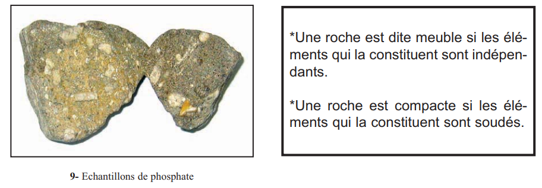
📷 Fig.9 — Échantillons de phosphate
p.56
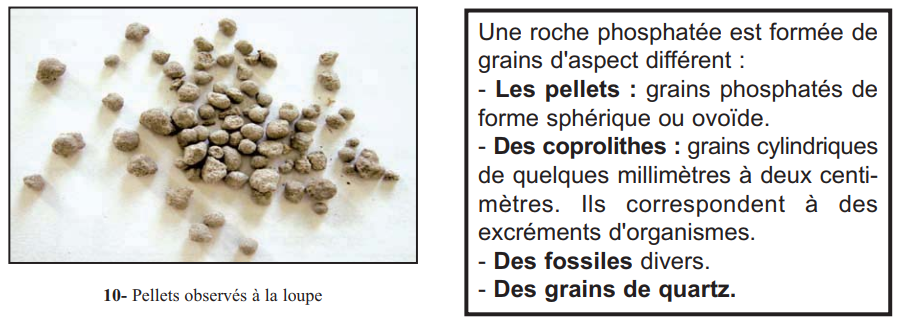
📷 Fig.10 — Pellets observés à la loupe
p.56
La roche phosphatée est composée de grains d'aspect différent :
Constituant
Description
Pellets
Grains phosphatés sphériques ou ovoïdes — constituant principal
Coprolithes
Grains cylindriques (quelques mm à 2 cm) — excréments d'organismes fossilisés
Fossiles divers
Dents de requin, fragments d'os de vertébrés, plancton marin
Quartz
Grains de silice mêlés aux grains phosphatés
Composition schématique d'une roche phosphatée (vue à la loupe binoculaire)
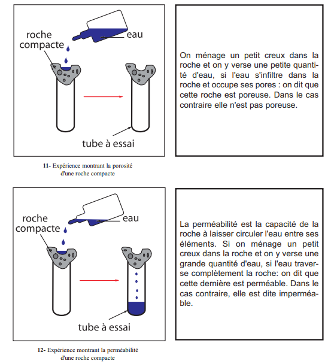
📷 Fig.11 et 12 — Expériences de porosité et perméabilité
Images du manuel p.57
📌 Retenons
Roche meuble :
éléments indépendants les uns des autres (non soudés).
Roche compacte :
éléments soudés par un ciment.
Pellets :
grains phosphatés de forme sphérique ou ovoïde, constituant principal du phosphate.
Coprolithes :
grains cylindriques correspondant à des excréments fossiles d'organismes.
✏️ Mini-quiz — Aspect de la roche
1. Les grains sphériques ou ovoïdes de la roche phosphatée s'appellent des .
2. Les coprolithes correspondent à des .
2. Propriétés vis-à-vis de l'eau et des réactifs chimiques
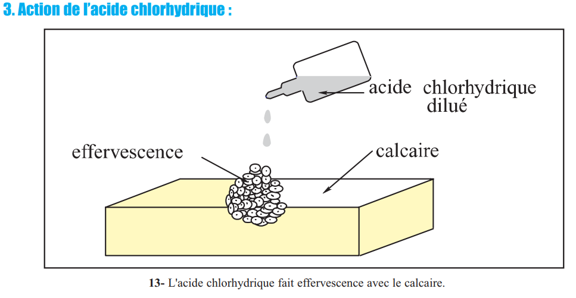
📷 Fig.13 — Action de l'acide chlorhydrique
p.58
Expérience
Protocole
Résultat
Conclusion
Porosité
Creux dans la roche + quelques gouttes d'eau
L'eau s'infiltre dans les pores
Roche poreuse (variable)
Perméabilité
Grande quantité d'eau sur la roche
L'eau traverse la roche
Roche perméable (variable)
Action HCl
Quelques gouttes d'HCl dilué sur la roche
Effervescence (dégagement CO₂)
Présence de calcaire (CaCO₃) dans le ciment
Action chaleur
Chauffage dans un tube à essai
Odeur fétide
Présence de matière organique décomposée
💡 Porosité vs Perméabilité — ne pas confondre
Porosité : capacité d'une roche à contenir de l'eau dans ses pores (espaces vides). Une roche peut être très poreuse mais peu perméable (exemple : argile = poreuse mais imperméable car les pores sont trop petits et non connectés). Perméabilité : capacité d'une roche à laisser CIRCULER l'eau entre ses éléments. La perméabilité dépend de la taille et de la connexion des pores, pas seulement de leur volume. Le phosphate a une porosité et une perméabilité variables selon le gisement.
✏️ Mini-quiz — Propriétés physico-chimiques
1. L'effervescence du phosphate avec l'acide chlorhydrique prouve la présence de .
2. L'odeur fétide dégagée lors du chauffage du phosphate est due à la présence de .
3. La différence entre porosité et perméabilité est que la porosité mesure la alors que la perméabilité mesure la .
🗺️ Activité 3 — Localisation et Genèse des phosphates (p.59–62)
1. Localisation des gisements en Tunisie
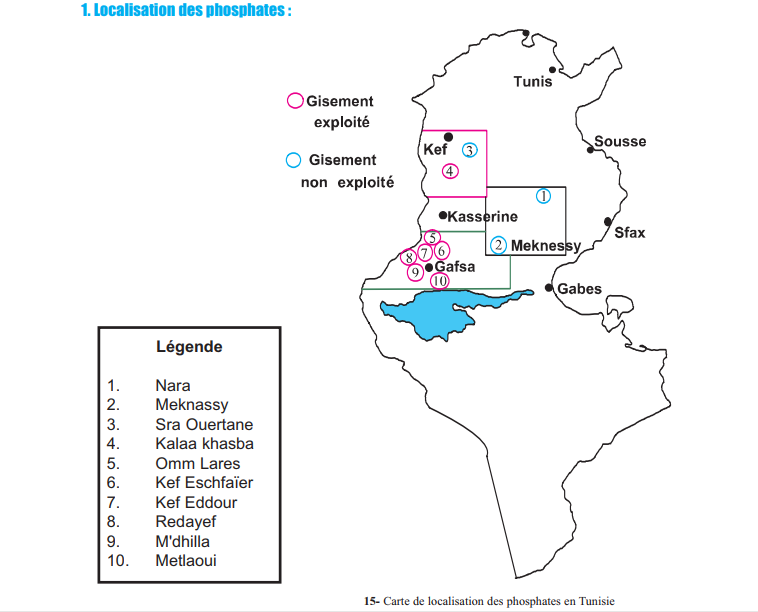
📷 Fig.15 — Carte de localisation des phosphates en Tunisie
Image du manuel p.59
Les gisements exploitables sont regroupés en 3 bassins autour de Kasserine :
💡 Pourquoi les gisements sont-ils autour de Kasserine ?
À l'éocène, Kasserine était une île émergée (confirmé par l'absence de dépôts éocènes). Les bassins sédimentaires marins entourant cette île constituaient des "pièges" favorables à la formation de phosphates : faible profondeur, hauts-fonds limitant l'échange avec le large, courants ascendants riches en nutriments favorisant le développement du plancton.
Carte schématique de localisation des gisements de phosphates en Tunisie
2. Genèse des phosphates — Les indices
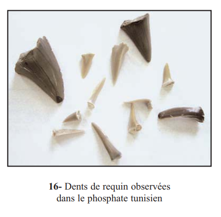
📷 Fig.16 — Dents de requinp.60
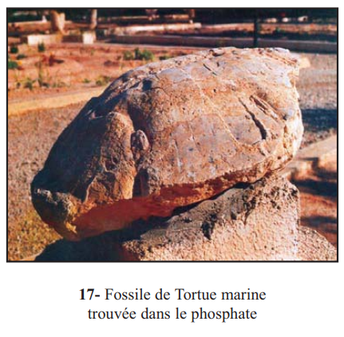
📷 Fig.17 — Fossile de tortue marinep.60
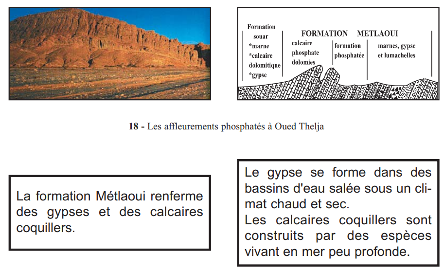
📷 Fig.18 — Les affleurements phosphatés à Oued Theljap.60
Indice
Observation dans le manuel
Interprétation paléoenvironnementale
Fossiles marins
Dents de requin (fig.16), fossile de tortue marine (fig.17), plancton (fig.21)
Milieu marin → mer peu profonde
Gypse associé
Formation Métlaoui contient du gypse
Eau salée + évaporation intense → climat chaud et sec
Calcaires coquillers
Calcaires coquillers dans la formation Métlaoui
Construits par espèces vivant en mer peu profonde
Stratigraphie
Absence de terrains éocènes à Kasserine
Kasserine = île émergée à l'éocène → âge éocène du phosphate
Odeur fétide
Chauffage du phosphate → odeur de cadavres
Décomposition de matière organique → origine organique
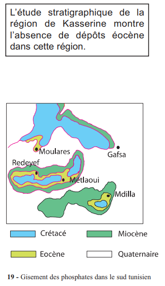
📷 Fig.19 — Gisement des phosphates dans le sud tunisienp.61
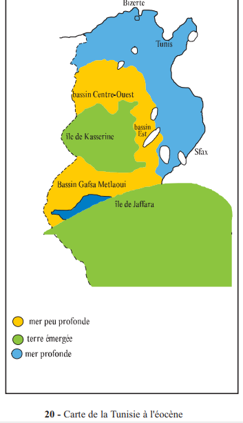
📷 Fig.20 — Carte de la Tunisie à l'éocènep.61
✏️ Mini-quiz — Indices de genèse
1. La présence de fossiles de requins et de tortues marines dans le phosphate indique que .
2. La présence de gypse associé aux phosphates indique un .
3. L'âge des phosphates tunisiens est .
3. Mécanisme de formation — Les conditions
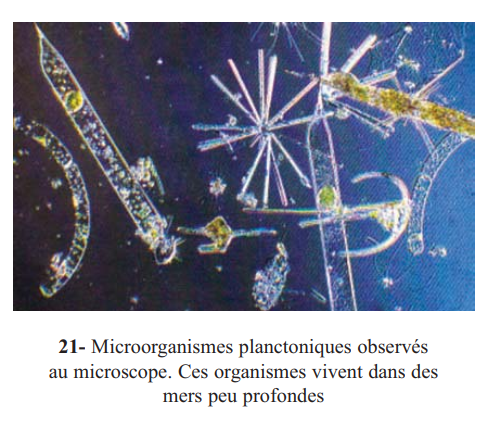
📷 Fig.21 — Microorganismes planctoniquesp.62
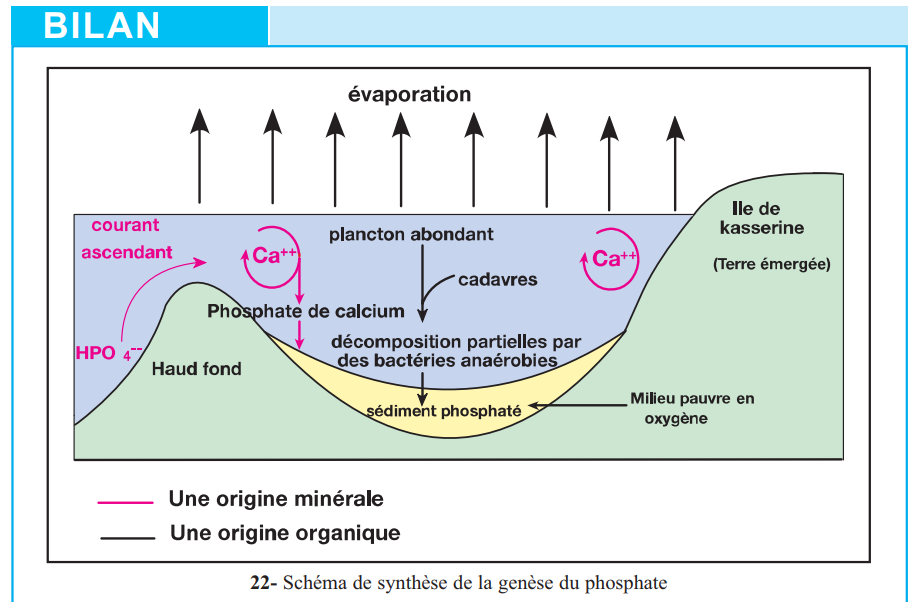
📷 Fig.22 — Schéma de synthèse de la genèsep.64
Étape
Description
1. Source du phosphate
Eau de mer contient HPO₄²⁻ dissous + organismes planctoniques concentrent le phosphate dans leurs cellules + vertébrés (squelettes, dents riches en phosphate)
2. Les pièges
Bassins marins peu profonds, proches des côtes, limités par des hauts-fonds + courants ascendants riches en nutriments → abondance du plancton
3. Mort et accumulation
Organismes meurent → s'accumulent au fond des bassins
4. Décomposition
Milieu pauvre en O₂ (anaérobie) → bactéries anaérobies décomposent PARTIELLEMENT la matière organique
5. Sédiment phosphaté
Formation de sédiment phosphaté consolidé en roche au cours du temps
Schéma de synthèse de la genèse du phosphate tunisien (d'après fig.22)
📌 Retenons — Genèse
Origine organique :
le phosphate tunisien provient principalement de la décomposition partielle de la matière organique (plancton + vertébrés) par des bactéries anaérobies.
Pièges à phosphates :
bassins marins peu profonds, proches des côtes, limités par des hauts-fonds, alimentés par des courants ascendants riches en nutriments.
Conditions de formation :
mer peu profonde + climat chaud et sec + milieu pauvre en O₂ + âge éocène.
📋 Bilan (p.63–64)
1Le phosphate présente un grand intérêt économique pour la Tunisie. Il est utilisé dans les secteurs . La Tunisie est le . Mais son exploitation génère des déchets qui polluent l'air, le sol, les nappes et la mer.
2La roche phosphatée est formée de grains phosphatés appelés , de déchets organiques fossilisés appelés et de fossiles divers. Elle dégage une . Ses propriétés (porosité, perméabilité) sont . L'action de HCl provoque une effervescence prouvant la présence de .
3Les trois bassins de gisements de phosphates sont localisés autour de la région de . L'étude stratigraphique montre l', ce qui indique que cette région était une .
4L'étude des fossiles marins (dents de requin, tortues) et des roches accompagnant le phosphate (gypse, calcaires coquillers) montre que le phosphate s'est formé à l' dans une . Les phosphates ont surtout une origine . Les bassins peu profonds limités par des hauts-fonds constituent les .
🃏 Flashcards — Vocabulaire clé du chapitre
✏️ QCM — Format CAPES (1 à 3 bonnes réponses par question)
Questions du manuel (p.65) et questions complémentaires format CAPES
Correction :
📝 Exercices interactifs
📖 Questions du manuel (p.65) — Cochez la (ou les) bonne(s) réponse(s)
Q1. Les phosphates de Tunisie datent :
Q2. Les gisements exploitables de phosphates sont situés :
Q3. Les phosphates de Tunisie proviennent de :
Q4. Les pièges à phosphates sont des bassins :
🪨 Ex.1 — Identifier les constituants d'une roche phosphatée (exercice 2, p.66)
Le phosphate de Kef Eschfaïer (Métlaoui) est constitué de grains fins réunis par un ciment. Il fait effervescence avec l'acide et dégage une odeur fétide. Il renferme des fossiles : dents de requin et plancton marin. Exploiter ces données.
Observation
Interprétation
Grains fins réunis par un ciment
Effervescence avec HCl
Odeur fétide au chauffage
Dents de requin + plancton marin
🌊 Ex.2 — Reconstituer les conditions de genèse (exercice 1, p.65)
À l'éocène, la région de Kasserine était une île. Compléter le texte en utilisant les mots : Kasserine, éocène, hauts fonds, bactéries anaérobies, plancton, peu profonde, fossiles marins, gypse.
Les gisements de phosphates tunisiens sont d'âge . À cette époque, la région de était une île émergée entourée de bassins marins , limités par des . La présence de (dents de requin, tortues) et de confirme un milieu marin et un climat chaud et sec. Le phosphate provient essentiellement de décomposé partiellement par des dans des milieux pauvres en oxygène.
🔢 Ex.3 — Remettre dans l'ordre les étapes de formation du phosphate
Remettre les étapes dans l'ordre chronologique de formation :
?
⠿ Consolidation des sédiments en roche phosphatée
?
⠿ Développement abondant du plancton dans les bassins peu profonds
?
⠿ Décomposition partielle par bactéries anaérobies → sédiment phosphaté
?
⠿ Mort des organismes → accumulation au fond des bassins
?
⠿ Milieu pauvre en O₂ → décomposition incomplète de la matière organique